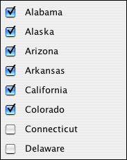
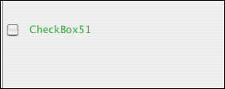
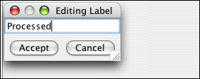
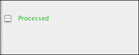

Checkbox widget
The checkbox widget provides a simple way to record answers to yes/no questions in your data.Example:

In the Create Form tab, click on the checkbox widget icon in the toolbar.
The checkbox widget appears with a default name.

Double click the name to change it to whatever you would like.

That's it! The checkbox is ready to record data in Enter Data mode.

| Previous page | Return to top of page | Next page |